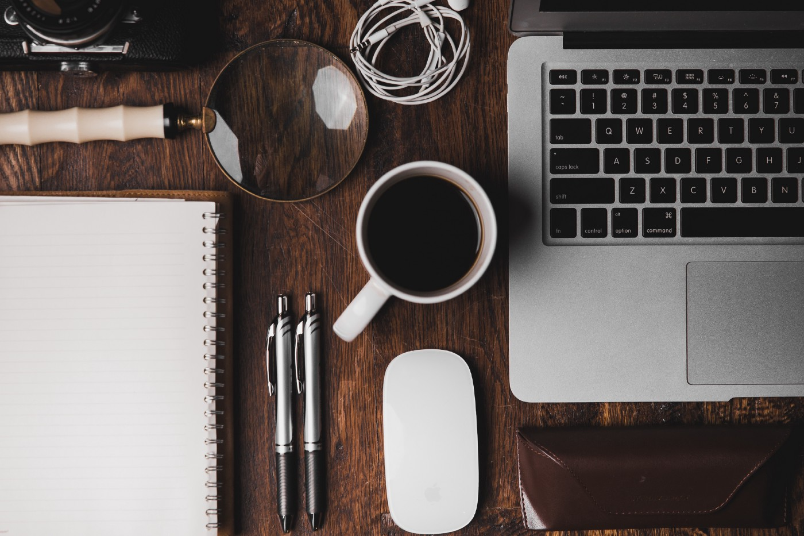

I am sure most of us have been questioning ourselves if it is okay to do nothing substantial during the time of this pandemic. Some people say this is a once in a lifetime opportunity to figure out your life, while others believe it is okay for you to be yourself and not succumb to societal pressure. As the world is out there battling with COVID-19, some of us here are trying to figure the aftermath of it all.
In a country where 197 million people suffer from some kind of mental disorder, 45 million of which suffer from anxiety, it is not easy for us to be locked inside our own premises trying to adapt the work from home culture. Amidst this sense of loss of freedom, people often find themselves confused over various things. The urgency to meet family, loved ones, or simply going out for a get-together spikes freshness. The continuous marathon of striving to perfection is nothing less than a burden to people who find themselves lost right now.
I agree with the fact that this is a lot of time in hand for some people to refine their skills but you necessarily do not have to stretch your already haywire mental state to the brink of utility. Having said that, we all need to do a few things to keep our sanity in check. Start with a few activities you always wanted to do but could not just find the right time for.
Some people will continue to hustle and this should not make you feel like you’re running out of time and finishing last in a race. Do everything at your own pace. Do more of what makes you feel good no matter how insignificant and do it unapologetically. This break might be the break you’ve been wanting for the longest time to reset your mental peace. Spend this time figuring out yourself. Don’t just let it pass.